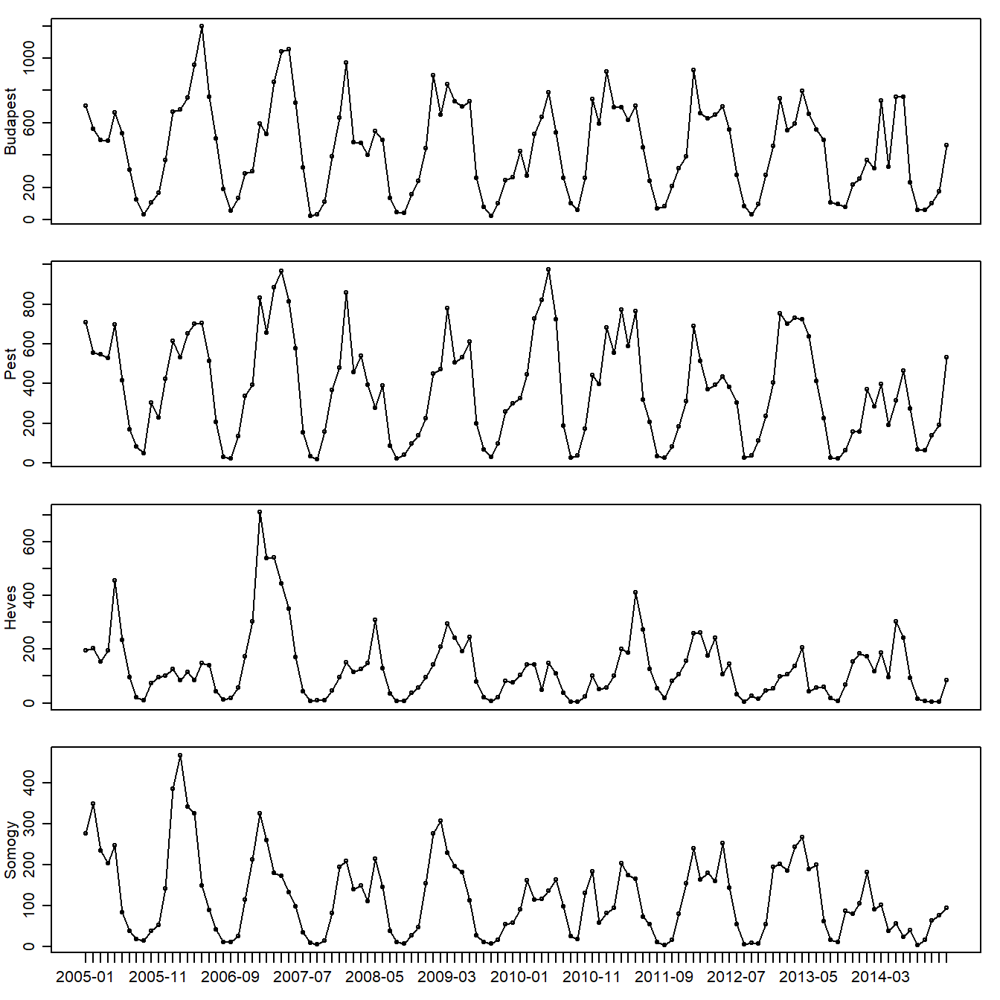

Chapter 5 Exploratory data analysis
Administratively, Hungary is split up into its counties, while the capital city, Budapest, is given a separate designation. Budapest which has, by far, the highest population density in the data set, was an obvious choice to include in my study. Of the remaining data sets, I have chosen the counties with the highest, median and lowest population densities, which are Pest, Heves and Somogy respectively (Hungarian Central Statistical Office, 2019).
On a technical note, I chose to aggregate the weekly data into monthly data. Weekly data is difficult to handle for many reasons, particularly since the seasonal period is not exactly 52 (Hyndman & Athanasopoulos, 2021).
plot1 <- function() {par(mfrow=c(1,1),mar=c(5.1,4.1,4.1,2.1),mgp=c(3,1,0),oma=c(0,0,0,0))}
chickenpox = read.csv("data/hungary_chickenpox.csv",header=T,stringsAsFactors = F)
library(fpp3)## ── Attaching packages ──────────────────────────────────────────── fpp3 1.0.3 ──## ✔ tibble 3.3.1 ✔ tsibble 1.2.0
## ✔ dplyr 1.2.0 ✔ tsibbledata 0.4.1
## ✔ tidyr 1.3.2 ✔ ggtime 0.2.0
## ✔ lubridate 1.9.5 ✔ feasts 0.5.0
## ✔ ggplot2 4.0.2 ✔ fable 0.5.0## ── Conflicts ───────────────────────────────────────────────── fpp3_conflicts ──
## ✖ lubridate::date() masks base::date()
## ✖ dplyr::filter() masks stats::filter()
## ✖ tsibble::intersect() masks base::intersect()
## ✖ tsibble::interval() masks lubridate::interval()
## ✖ dplyr::lag() masks stats::lag()
## ✖ tsibble::setdiff() masks base::setdiff()
## ✖ tsibble::union() masks base::union()## Registered S3 methods overwritten by 'bayesforecast':
## method from
## autoplot.ts forecast
## forecast.ts forecast
## fortify.ts forecast##
## Attaching package: 'bayesforecast'## The following objects are masked from 'package:fabletools':
##
## model, report## The following objects are masked from 'package:base':
##
## beta, gamma##
## Attaching package: 'forecast'## The following objects are masked from 'package:bayesforecast':
##
## fourier, naivechickenpox$Date = as.Date(chickenpox$Date, "%d/%m/%Y")
pox = chickenpox %>% as_tsibble(index = Date)
season = 12; test = 12; itns = 2000
# convert to monthly data, decompose (for outlier checks) and
# find the Box-Cox lambda (to adjust for heteroskedasticity)
buda1 = pox %>% select(BUDAPEST) %>% index_by(Month = yearmonth(Date)) %>% summarise(Cases=sum(BUDAPEST))
buda1_decomp <- buda1 %>% fabletools::model(STL(Cases)) %>% components()
bc.lambda.buda <- buda1 %>% features(Cases, guerrero) %>% pull(lambda_guerrero)
plot.buda = ts(as.numeric(buda1$Cases),freq=season,start=2005)
pest1 = pox %>% select(PEST) %>% index_by(Month = yearmonth(Date)) %>% summarise(Cases=sum(PEST))
pest1_decomp <- pest1 %>% fabletools::model(STL(Cases)) %>% components()
bc.lambda.pest <- pest1 %>% features(Cases, guerrero) %>% pull(lambda_guerrero)
plot.pest = ts(as.numeric(pest1$Cases),freq=season,start=2005)
heves1 = pox %>% select(HEVES) %>% index_by(Month = yearmonth(Date)) %>% summarise(Cases=sum(HEVES))
heves1_decomp <- heves1 %>% fabletools::model(STL(Cases)) %>% components()
bc.lambda.heves <- heves1 %>% features(Cases, guerrero) %>% pull(lambda_guerrero)
plot.heves = ts(as.numeric(heves1$Cases),freq=season,start=2005)
somogy1 = pox %>% select(SOMOGY) %>% index_by(Month = yearmonth(Date)) %>% summarise(Cases=sum(SOMOGY))
somogy1_decomp <- somogy1 %>% fabletools::model(STL(Cases)) %>% components()
bc.lambda.somogy <- somogy1 %>% features(Cases, guerrero) %>% pull(lambda_guerrero)
plot.somogy = ts(as.numeric(somogy1$Cases),freq=season,start=2005)par(mfcol=c(4,1),mar=c(1,2.75,1,1),mgp=c(1.75,.75,0),oma=c(1.5,0,0,0))
plot(plot.buda,xaxt = "n",type='o',ylab="Budapest")
plot(plot.pest,xaxt = "n",type='o',ylab="Pest")
plot(plot.heves,xaxt = "n",type='o',ylab="Heves")
plot(plot.somogy,xaxt = "n",type='o',ylab="Somogy")
dates = as.Date(somogy1$Month); sequence = attributes(plot.somogy)$tsp
axis(1, at = seq(sequence[1], sequence[2], along = plot.somogy), labels = format(dates, "%Y-%m"))
Figure 5.1: Monthly chickenpox cases in Budapest, Pest, Heves, and Somogy from 2005 to 2014
Let us define an outlier as an observation that is either greater than 3 interquartile ranges above the 0.75 quantile, or 3 interquartile ranges below the 0.25 quantile, a fairly strict criteria detailed by Hyndman and Athanasopoulos (2021).
# check for outliers in the STL remainder
flag_outliers <- function(decomp, region) {
decomp %>%
filter(remainder < quantile(remainder, 0.25) - 4*IQR(remainder) |
remainder > quantile(remainder, 0.75) + 4*IQR(remainder)) %>%
as_tibble() %>%
transmute(Region = region, Month = format(Month), Cases, Remainder = round(remainder, 1))
}
outliers <- bind_rows(
flag_outliers(buda1_decomp, "Budapest"),
flag_outliers(pest1_decomp, "Pest"),
flag_outliers(heves1_decomp, "Heves"),
flag_outliers(somogy1_decomp, "Somogy")
)
knitr::kable(outliers, caption = "Observations flagged by the outlier rule applied to the STL remainder")| Region | Month | Cases | Remainder |
|---|---|---|---|
| Heves | 2007 Jan | 712 | 345.6 |
The only observation that qualifies as an outlier under this criteria (Table 5.1) is the case number for January 2007 in the Heves series, which has a very clear peak in Figure 5.1. However, if we replace this observation with the average of the cases in January of the preceding and subsequent year, this outlier case disappears, but the very next month, February 2007 exceeds the outlier threshold value. Likewise, this behaviour repeats if we adjust the February 2007 observation. This process repeats itself until we replace the April 2007 observation, but then other observations at different times are flagged. Hence, it can be regarded that these values may not be true outliers, such as a once-off super-spreader event. Therefore, no change is made to the Heves series.